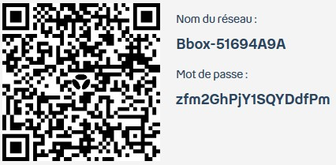

Guide Voyageurs - Aix-en-Provence
Bienvenue chez moi !
Merci d’avoir choisi de séjourner ici ! Ce guide rassemble toutes les informations essentielles, le règlement et les détails pratiques de la chambre Tamaris pour que votre séjour soit le plus agréable possible.
Adresse
4 Avenue des Tamaris
13100 Aix-en-Provence
Provence-Alpes-Côte d'Azur
En un coup d'œil
L'essentiel pour votre arrivée
Wi-Fi
Connexion rapide
Réseau : Bbox-51694A9A
Mot de passe : zfm2GhPjY1SQYDdfPm
Scannez ce QR code avec l'appareil photo de votre téléphone pour vous connecter automatiquement au réseau sans avoir à saisir de mot de passe.

Horaires
- Arrivée : À partir de 18:00
- Départ : Avant 11:00
Pour faciliter votre arrivée, je vous invite à me communiquer votre heure d'arrivée estimée. En cas de retard important, merci de bien vouloir me prévenir.
Comment accéder au logement
La maison est située à proximité de l'hôpital d'Aix-en-Provence, juste après le service des urgences, au début du chemin des Tamaris.
- Repères : C'est une maison avec un mur jaune et un portail gris foncé, située juste derrière le bâtiment de l'IRM (un préfabriqué gris foncé). Vous y verrez souvent un break rouge garé devant.
- Pour entrer : Vous pouvez sonner pour que je vienne vous ouvrir. Si je ne suis pas là, vous pouvez taper le code sur le boîtier pour ouvrir.
Contact
Si vous avez la moindre question ou un besoin particulier, n’hésitez pas à me contacter. Je vous souhaite un excellent séjour et reste à votre disposition.
Bon à savoir
Manuel de la maison & Règlement
Merci de suivre ces quelques règles pour vous comporter en voyageur respectueux et éviter tout problème pendant votre séjour.
Qui peut séjourner
- 👥 Capacité Conçu pour votre confort
- 🐾 Animaux Pas d'animaux autorisés
Règles de vie
- 🌙 Calme Horaires de respect du calme : 21:00 - 09:00
- 🚭 Tabac Interdiction de fumer à l'intérieur
- 🎉 Événements Pas de fête ni de soirée
- 📷 Photographie Aucune photographie commerciale autorisée
Accès & Entretien
- 🔑 Entrée Arrivée autonome
- 🍽️ Vaisselle Vous devez faire votre vaisselle avant de partir.
- 🗑️ Poubelles Merci de jeter les poubelles en partant.
- 🛏️ Draps Merci d'enlever les draps du lit et de les déposer dans la salle de bain.
- 🧹 Ménage Si vous n'avez pas le temps de faire le ménage, prévenez-moi : nous trouverons une solution ensemble. Je peux par exemple faire intervenir une femme de ménage (forfait de 22 € pour la chambre).
Visuel
Aperçu et Itinéraire
1. Itinéraire
Le trajet depuis la gare routière vers la maison.

2. Digicode & Sonnette
Vous pouvez sonner ou utiliser le digicode pour ouvrir le portail.

3. L'entrée
L'accès direct à l'appartement par la terrasse.

Nos bonnes adresses
Sorties & recommandations
Quelques suggestions pour profiter pleinement d'Aix-en-Provence.
Où manger
- Sin Ky — un excellent restaurant vietnamien.
- Da Noemi — un petit italien très apprécié.
- Le Four Aixois — une valeur sûre côté pizzas.
- Le Galifet — une très belle adresse pour le déjeuner ; cadre superbe et tarifs plus accessibles le midi que le soir.
- Rue Boulegon — plusieurs restaurants et terrasses très agréables.
Boire un verre
- Brasserie du Grillon (cours Mirabeau) — une véritable institution aixoise aux prix très raisonnables, idéale pour un verre en terrasse.
- Le Vieux Tonneau — sympathique pour un verre accompagné d'une petite restauration, fréquenté surtout par des Aixois.
- Hôtel de Caumont — un verre dans un jardin particulièrement charmant.
- Béchard (cours Mirabeau) — célèbre pâtisserie, parfaite pour une halte gourmande.
Les marchés (le matin)
- Marché provençal (fruits, légumes, artisanat, tissus...) — mardis, jeudis et samedis matin, place de Verdun et dans plusieurs rues du centre.
- Marché de la place Richelme (alimentaire) — tous les matins.
- Marché aux fleurs — mardis, jeudis et samedis matin, place de l'Hôtel de Ville.
- Marché aux vêtements — mardis, jeudis et samedis matin, cours Mirabeau.
Nous vous souhaitons un excellent séjour à Aix-en-Provence !
Avant de partir
Procédure de départ
Voici un petit point rapide avant de prendre la route.
- Vaisselle et Poubelles : Pensez bien à faire votre vaisselle et à jeter les poubelles.
- Énergie : Éteindre les lumières et les appareils.
- Aération : Je vous serais reconnaissant(e) de bien vouloir laisser la fenêtre de la salle de bain ouverte afin d'aérer les lieux.
- Info Ménage : L'aspirateur se trouve à côté du frigo, les produits ménagers pour la salle de bain et la cuisine se trouvent dans le placard de la cuisine, en haut.
- Info Ménage : Merci de bien penser à enlever les draps afin de les disposer sur la machine à laver
- Info Ménage : Si vous n'avez pas envie de vous encombrer avec le ménage ou si vous ne pouvez pas le faire ( départ très tôt etc ...) nous vous proposons de faire appel à une société pour le ménage à hauteur de 40€ pour la durée du séjour..
- Heure de départ : L'appartement doit être libéré pour 11h, car l'agent d'entretien arrivera à cette heure pour préparer le logement.
Rendre les clés
Il faut mettre les clés dans la boîte aux lettres grise du bas qui se trouve sur le mur jaune devant la maison.
J'espère que votre séjour s'est bien passé. Merci infiniment pour votre compréhension et votre coopération !